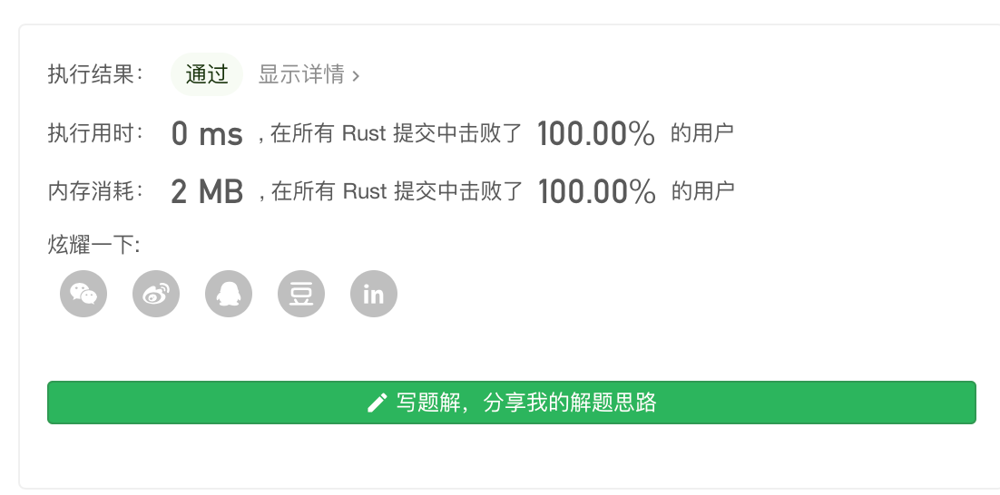
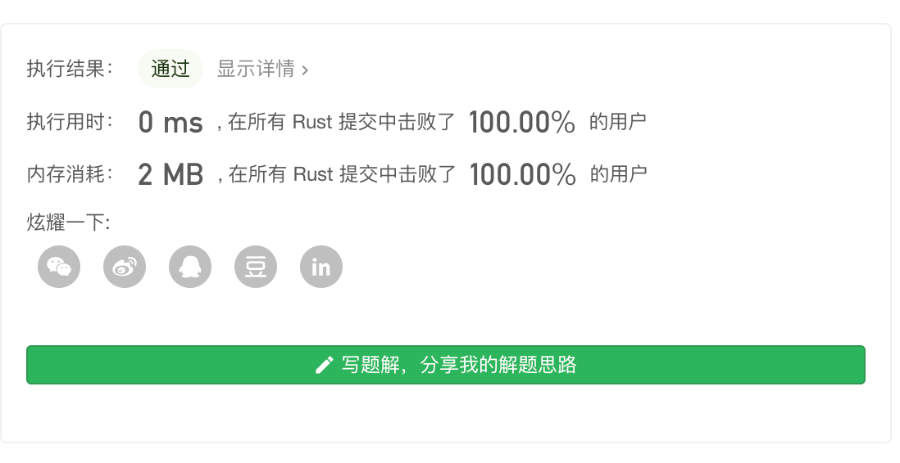

Leetcode 第162题 寻找峰值
峰值元素是指其值大于左右相邻值的元素。
给定一个输入数组 nums，其中 nums[i] ≠ nums[i+1]，找到峰值元素并返回其索引。
数组可能包含多个峰值，在这种情况下，返回任何一个峰值所在位置即可。
你可以假设 nums[-1] = nums[n] = -∞。
示例 1:
输入: nums = [1,2,3,1] 输出: 2 解释: 3 是峰值元素，你的函数应该返回其索引 2。
示例 2:
输入: nums = [1,2,1,3,5,6,4] 输出: 1 或 5 解释: 你的函数可以返回索引 1，其峰值元素为 2； 或者返回索引 5， 其峰值元素为 6。
说明:
你的解法应该是 O(logN) 时间复杂度的。
解题思路
题目 要求我们寻找 峰值, 相像一座山 两边都比山顶小,山顶最高。
那么 一个长度为 n 的数组, 就会满足 n > n-1 (等式1)并且 n> n + 1(等式2) ,也就是说某个元素 大于它前面一个元素,并且大于它后面一个元素。 当 n = n + 1 也就是 n的后一位时 n 变成 n -1 也就是变成了前一位, 那么 带入原式 n -1 > n,与 等式1 不符可以得出 等式1 和等式 2 是互逆的 所以 我们 可以 只需要等式1,当等式1 不满足时 必然 就能找到 一个最大n-1, 由于考虑 边界情况 n -1 > 0,所以 n>1,n 从1开始。
所以我们得出 只要 循环 n > n -1 当条件不满足时，就能找到那个数,那我们把条件取反 变成 n -1 > n.
线性扫描
就像我们上面分析的那样,这里我们通过一次循环,然后 我们要 卡在 波峰 后面一个点去判断 是不是前一个车点 是不是波峰。波峰的点 一定大于 波峰后面一个点。
为了处理 波峰在 最后一个点的情况,我们 往给定的数组里面添加一个很小很小的值,为了处理假定只给我们一个数也就是波峰就是第一个数的情况 此时 循环不会执行,直接返回0.
pub fn find_peak_element(nums: Vec<i32>) -> i32 { let mut nums = nums; nums.push(std::i32::MIN); for n in 1..nums.len(){ if nums[n -1] > nums[n] { return (n-1) as i32; } } return 0; } fn main() { let mut tt = vec![5,3,1,7,4]; println!("{:?}",find_peak_element(tt)); }
时间复杂度：O(n)
空间复杂度：O(1)
虽然完成了,但是题目给出了说明 要你在O(logN) 的时间复杂度解出这道题,很显然这种做法不符合提议,但是可以帮助理解题目。

递归二分查找
看到 O(logN),并且是搜索东西,我们脑子里就应该能想到,二分搜索算法,这个模板 通常是用来不断的把搜索区间缩小然后搜索到指定数的,但是这个算法 要求数组是有序的,我们使用这个算法的话 首先 我们要知道我们要搜索什么。
我们 要搜索的 是峰值,也就是说这个值 在某一个局部,是最大值,最小的一个局部是 3个元素组成。再结合 我们上一题得出的经验。假设我们使用二分搜索 被搜索到的数,需要 小于前一个数 那么他就是 峰值。
如果 搜索的值 比 它的 前一个 比当前大 那么就是往左区间搜索, 否则 就是往右区间搜索。
pub fn find_peak_element(nums: Vec<i32>) -> i32 { helper(nums.as_ref(),0,nums.len()-1) } pub fn helper(nums:&Vec<i32>, left:usize, right:usize) -> i32 { if left == right { return left as i32;} let mid= left + ( right - left )/ 2; if nums[mid] > nums[mid + 1] { return helper(nums,0,mid); }else{ return helper(nums, mid + 1, right); } }
时间复杂度： O(logN)
空间复杂度：O(1)
